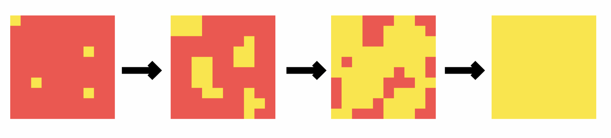

Stopping Aging in Neural Cellular Automata
In this paper we are going to discuss the condition necessary to make a mortal
neural cellular automata, immortal
Most living organisms age and eventually die because of it, but a few don’t, and some of
them are incredibly hard to kill, even if you cut their head off, it just regrows
.
Neural Cellular Automata are a very good representation of living organisms: scientists managed
to create cellural automatas that are able to represent any image, some of them after a while
decay, others manage to maintain the final state, and some
of them are even able to regenerate damage.
Throughout this paper we are going to use different terms with capital letter to refer to different types of cellular automatas:
- With “Growing” we indicate a neural cellular automata that grows into a final state and then decays, this represents growing and aging biological organisms
- With “Persistent” we indicate a cellular automaton that grows into a final state and then keeps it for an infinite amount of time, some biological organisms like lobsters have this property.
- Finally with “Regenerating” we refer to persistent organisms that are even able to regenerate damage and have a infinite lifespan, biological examples of these are the planarians.
Growing
Persistent
Regenerating
Video 1: Example of the three types of Cellular Automata
Biological organisms often times blur the line between this categories, for example most aging organisms like ourselves
are able to heal wounds, and some like salamanders are even able to regenerate missing limbs,
for practical reasons, however, we are going to stick with these 3 categories
Sometimes we will abbreviate Cellular Automata with CA to make the descriptions less verbose
In this Article we are going to ask the following questions:
- Is it possible to make a Growing neural CA Persistent or Regenerating?
- What is the minimum amout of effort to be able to do so?
Switching the Rule
First of all we wanted to know if it is possible to take a Growing cellular automata
and after a arbitrary number $n$ of steps
By arbitrary we mean any number of steps before the cellular automata decays
change the update rule in order to make it Regenerating. We can write it mathematically like this
$$
\begin{cases}
x_{new}=f_1(x_{old})\quad \textrm{ if }\quad n_{iter} \le n\\
x_{new}=f_2(x_{old})\quad \textrm{ if }\quad n_{iter} > n
\end{cases}
$$
Where $f_1$ is a growing rule and $f_2$ is a rule that we trained to make the organism Regenerating
$n$ in this case should be considered a parameter, that is, if we change $n$ we don't need to change $f_2$,
so the switch could happen at any iteration
To make a parallel with a biological system, this is equivalent to asking:
Is it possible to make an organism immortal if we have the ability to change its DNA in every single cell
at once?
This is not entirely a correct statement since there are more ways to change the behaviour of
a biological system, for example you can do so by changing the electric potential .
There is also the possibility that some changes to the update rule are impossible to encode in the DNA by itself,
so the best way to view the switch is by considering it as a change in the way the cells operate.
Since we had already trained a Regenerating CA we tried to substitute it directly into $f_2$, the result
however was a complete failure (Video 2) where the switch happens at $n=40$
Video 2: Evolution when we use a $f_1 = $Growing CA for the first 40 steps then
switch to a $f_2 = $Regenerating CA for the next iterations
This outcome at first sight might be surprising, because as can be seen in the first video the visible
RGBA channels of the cell evolve in a similar fashion in both the growing and regenerating CA. However, the hidden
channels, which are the ones used by the cells to transfer information between them, are
in general completely different, which makes the two CAs incompatible.
We can show this behaviour empirically by visualizing the hidden states of two CAs after they reached
the target state (Figure 1).
We can notice that the CA on the left uses this hidden state to encode something similar to a $x$ coordinate,
while the CA on the right uses the same hidden state to represent a sort of distance from the center.

 Figure 1: Encodings of the 6th channel after 300 iterations of two independently trained Regenerating CAs.
Figure 1: Encodings of the 6th channel after 300 iterations of two independently trained Regenerating CAs.
This means that to make the model work as intended we must train $f_2$ with the goal of making the organism
regenerating, we will call the trained $f_2$ rule Switch.
The only difference between training a Regenerating CA and Switch is the training pool (Figure 2): instead
of starting with a single dot on the canvas, the pool is initialized by having each element be the output
of $n$ steps of $f_1$ (in our case the Growing CA). That way Switch learns to start from a state of a Growing CA and reach the
state of a Regenerating one.
The training seemed to be highly dependent from the starting parameters, in particular if we
started from a Regenerating CA the net seemed to converge faster, instead
if we started from a random initialization often times it didn't converge
 Figure 2: Sample of 15 images from the training pool used to train the Switch CA
Figure 2: Sample of 15 images from the training pool used to train the Switch CA
So, does it work if we train Switch with this method?
The answer is yes. Video 3 shows you what happens.
Video 3: The rule switches at the 60th step, you can clearly see when the switch happens
Some considerations
As already explained above, different CA rules will use different encodings to store the informations of
the organisms, so here are some other things that you can’t do:
-
You can’t use a Switch CA for a Growing one which has not been trained for
The Switch rule is tailor-made to be able to understand the specific encoding of the Growing rule
- You cannot just swap the Growing rule with another Regenerating (or Persist) rule
For the same reason of the one above and because the regenerating (and the persist) are trained with different starting points
- You cannot salvage a Growing rule that has decayed
We are not trying to resuscitate the dead, and so we didn’t train for it
Virus with fixed mask
Switch has some relevant problems that need to be addressed.
First of all during the transition from one rule to the next the system undergoes a major restructuring.
You can see it from Video 2: when the switch happens the organism becomes amorphus.
If this was a living organism that needs it’s organs to function 24h a day it will probably die before
the transition is completed.
The second problem is that we need to change every single cell of the organism in order to make it immortal,
in practice, however, we aren’t going to have the precision necessary
to be able to influence every single cell of a organism without missing even one, and,
as you can see from Video 4, if some of the cells (marked in blue) don’t transition from $f_1$
to $f_2$ the organism decays quickly.
 Video 4: On the left we plotted the cell mask, where the yellow cells evolve according to $f_2$ and the blue ones to $f_1$,
while on the right you can see the evolution video.
We can see that leaving only a couple of cells with the old update rule can be catastrophic for the organism
Video 4: On the left we plotted the cell mask, where the yellow cells evolve according to $f_2$ and the blue ones to $f_1$,
while on the right you can see the evolution video.
We can see that leaving only a couple of cells with the old update rule can be catastrophic for the organism
Randazzo et al. managed to change the
global properties of a CA by adding some cells that follow a different rule, so the next thing
that we tried to do was to train a neural CA that would be able to make a Growing into a Persist even
if not all the cells follow $f_2$ after the switch has happened. We will call this new CA Mask
The training proceeds as before, however we switch the update rule of only a given percentage of the cells.
Video 5 shows what happens with a CA rule trained to switch 80% of the cells. With this technique
we made Mask more flexible than Switch and at the same time we managed to avoid the restructuring phase,
without training for it.
This is because by having some of the old cells still around, the new rule has to learn to
collaborate and influence the old cells to be able to reach a stationary state.
In section 4 we will provide more explanations for this behaviour
Video 5: On the left we plotted the evolution of the cell mask, with yellow being the regenerating cells and blue the growing cells.
The rule switches at the 40th step with 80% of new cells, here the transition is not even noticeable
 Figure 3: Evaluation loss as the percentage of cells substituted changes, to have an image that resembles the target
the loss should be less than $10^{-2}$, we can see that after 300 iterations most of the Mask CAs decay,
while only the ones with more than 95% of cells substituted survive until the end
Figure 3: Evaluation loss as the percentage of cells substituted changes, to have an image that resembles the target
the loss should be less than $10^{-2}$, we can see that after 300 iterations most of the Mask CAs decay,
while only the ones with more than 95% of cells substituted survive until the end
One of the problems is that the effectiveness of Mask decreases as you increase the number of steps
and decrease the percentage of switched cells,
however it still significantly increases the lifespan of the CA.
In particular, Figure 3 shows the loss as a function of the number of steps and the percentage of cells substituted with Mask.
We notice that we need to switch at least 70% of cells to increase the lifespan
of the Growing CA by an order of magnitude, and at least 95% of cells to be able to make the Growing CA persist indefinitely.
In order to better understand Figure 3, Figure 4 shows some images and the corresponding losses


$5\times 10^{-3}$
$1\times 10^{-2}$
$5\times 10^{-2}$
Figure 4: Images as the loss changes, we can see that for losses $\approx 5\times 10^2$
the image starts to deteriorate significantly
Robustness
This section can be skipped
After training Mask we noticed that it got some nice properties without training for them:
-
The density of new cells does not need to be uniform, it just needs to locally equal or higher than the minimum percentage,
in fact, if the percentage of cells increases Mask would only benefit from it
-
The density of new cells can change multiple times during the evolution, and,
as long as the density remains higher than the minimum percentage, the CA will persist
-
If we train Mask to switch 80% of the cells, then use it in a case where we switch only 70% of cells,
it performs in a similar way to a Mask that was trained explicitly for 70% of adversarial cellsDa spiegare qua
Video 6 illustrates these points, it seems that Mask has learned rule that works well for a wide range of cell densities,
furthermore it manages to communicate effectively with regions with different concentration of cells
Video 6: The rule switches two times: the first at the 40th step with 70% of cells on the left side, and 100% of cells on the right side,
the second at the 120th step with a checkered pattern which maintains the minimum density of cells higher than 70%.
This Switch was trained to switch always 80% of the cells.
Realistic simulation of adversarials
One of the limitations of using a fixed mask is that it can’t model what happens when a kind of cell
overtakes the other. This is important because having the new cells overtake the old ones would be both more biologically plausible
because in biological organisms cells die and are replaced by new ones and could
reduce the minimum percentage of initial cells that need to be switched.
In an ideal case, we would only substitute a small percentage of cells, then these would gradually overtake the entire organism,
making it immortal (Figure 7).
The minimum percentage required depends from the speed of the aging process, if it's slow
you can start with fewer cells since they will have plenty of time to overtake the old ones

Figure 7: The idea is that the new cells learn to overtake the old one and than make the organism immortal,
so you need to inject fewer cells in the new organism
To make this work we first have to ask ourselves how do we model the evolution of the mask?
The Model
For simplicity we are going to restrict ourself in the case where we are going to have 2 rules ($f_1$ and $f_2$).
Before, a cell state was represented by a state vector having the first 4 components representing
the RGBA of the pixel and the remaining were hidden channels that helped the CA pass
information between its cells. If the $\alpha$ channel (transparency) is >0.1 it means
that the cell is alive, otherwise it’s dead
If we are going to have two different types of cells we are going to need two alpha channels.
Since a cell cannot be of both kinds at the same time we choose that if $\alpha_1$ is $>0.1$, then
$\alpha_2$ must be 0, and the cell update follows $f_1$ and vice versa.
At the same time, when both alphas are below $0.1$, the cell evolves with the average of both updates (Figure 8,9).
 Figure 8: The red cells evolve following $f_1$ while the yellow cells
follow $f_2$, the orange ones follow both. Keep in mind that the cells do not interact
directly with each other, the only way a cell can manage to influence its neighbors is by
changing its internal cell state
Figure 8: The red cells evolve following $f_1$ while the yellow cells
follow $f_2$, the orange ones follow both. Keep in mind that the cells do not interact
directly with each other, the only way a cell can manage to influence its neighbors is by
changing its internal cell state
 Figure 9: The vector on the left represents the old represetation of the CA state, and the one
on the right is the new representation. This new representation of the cells has an additional
$\alpha$ channel and to make the code simpler the alpha channels are now the last two components
Figure 9: The vector on the left represents the old represetation of the CA state, and the one
on the right is the new representation. This new representation of the cells has an additional
$\alpha$ channel and to make the code simpler the alpha channels are now the last two components
Keep in mind that neither update rules can directly influence the neighboring cells directly, so the adversarial
is forced to rely on changing its internal state in such a way that the other cell's rule makes it kill itself
$$
f_{1,2}: \mathbb{R}^{9\times (n_\textrm{channels}-1)} \to \mathbb{R}^{n_\textrm{channels}-1}
$$
Training technique
This section can be skipped if you are only interested in the results
One of the problems we first encountered was that the the new cells never tried to kill the old ones.
This meant that if they were severely outnumbered they wouldn't be able to salvage the CA.
One way to try to solve this problem would be to make a loss function like so:
$$
L=L_\textrm{target} + \lambda N_\textrm{old}
$$
Where $L_\textrm{target}$ is the distance to the target image, $N_\textrm{old}$
is number of old cells.
This however has the flaw that when we have just introduced the new cells the loss is bound to be high.
This means that the training algorithm will sacrifice some of the image quality in favor of having a higher speed of substitution of cells.
On the other hand, if we give the CA plenty of time before evaluating the loss, it might destroy the CA at the start and than rebuild it in time before the evaluation (like in figure 3)
To address this problem we made a custom loss that depended on the number of stepsThis doesn't increase the computation cost per epoch by any measurable amout, and it decreases the total number of epochs
$$
L=\int_{t_\textrm{start}}^{t_\textrm{end}}
\lambda_1(t)L_\textrm{target}(t)+
\lambda_2(t)N_\textrm{old}(t) dt
$$
Where $\lambda_1$ and $\lambda_2$ are hyperparameters that depent on the time (or equivalently number of steps),
and the loss is normalized such that We do this because doublign the total loss is equivalent to doubling the learning rate
$$
\int_{t_\textrm{start}}^{t_\textrm{end}}\lambda_1(t)+\lambda_2(t)\,\, dt=1
$$
In principle you can make $\lambda_{1,2}$ dependent on the number of epochs, we used this to teach first to the CA to kill the old cells, and than to learn to be Persistant.
We used this same technique to train a Growing CA that dies.
Results for Expanding the lifespan
Growing rule that dies
We have found that if the Growing CA evolves such that all its cells are dead at the end we can
salvage it with a way less percentage of initial adversarial cells, in the case of the butterfly only 5% CAMBIARE,
instead we need a much higher number of adversaries if the CA degenerates and, fills the whole space,
however this number is still way lower than in the case of the fixed mask (50% vs 80%).
Keep in mind that we don't lose any generality by imposing this condition since all the biological
organisms eventually vanish for $t\to\infty$
As you can see from the videos below it is possible to salvage the Growing rule with way
fewer new cells with respect to a fixed mask
Video 7: Evolution of a CA with 50% cells substituted
Video 8: Alpha channel representation of the same CA
Results for changing Global Properties
 Transoformation of the CA from green to red
Transoformation of the CA from green to red
This tecnique can be used to change other properties of the CA, such as the modification that had been tried in
. In that paper it was shown that to change some properties like the
color of the image a high concentration of adversarials was needed.
With our tecnique we were able to change the color of the CA by switching 2% of the original cell to the new rule.
Video 9: Evolution of a CA with 2.5% of cells substituted
Video 10: Alpha channel representation of the same CA
Adding a perturbation
In this final section we wanted to to know if we can add a small perturbation $\Delta w$ to the weights of a Growing cellular automata
in order to make it a persistent one, this is very interesting from a biological perspective
because we can answer the question:
How much do we need to change the rule (or DNA) in order to have a newborn non-aging organism?
The Model
In practice we keep the weights of the growing CA $w_\textrm{growing}$ fixed and generate another CA with weights $w_\textrm{new}$ which are equal to
$$
w_\textrm{new} = w_\textrm{growing} + \Delta w
$$
To be sure that $\Delta w$ will be as small as possible, we added an additional
term in the loss, that penalizes the $\mathbb L^2$ norm of the perturbation $|\Delta w|^2$.
So the total loss will be:
$$
L = L_\textrm{target} + \lambda |\Delta w|^2
$$
Where $L_\textrm{target}$ is the distance squared to the target image and $\lambda$ is a hyperparameter.
We will call the new CA trained in this way Perturbation
Results
Video 9: Perturbation CA trained with $\lambda=0.01$
It turns out that a very little perturbation can make the Growing CA into a Persistent or even
a Regenerating one, suggesting that a growing and a regenerating organisms aren't so different.
Below we show some data on how much different Growing and Perturbation actually are, and Video 9 shows the Perturbation CA evolution
$$
\frac{|\Delta w|^2}{|w_\textrm{growing}|^2}=0.17
$$
$$
\frac{\langle w_\textrm{new}, w_\textrm{growing}\rangle}{|w_\textrm{growing}||w_{\textrm{new}}|}=0.914
$$
We wanted to know if Perturbation has learned the same encoding of Growing,
so we tried to evolve both the Growing and Perturbation together,
it turns out that they are able to communicate between each other and
coordinate the growth of the organism
Even more interesting is the fact that Perturbation works as switch even if we didn't explicitly train for it!
Finally we noticed that we can also use Perturbation as a Mask, however it needs a high percentage of cells to work well (99%+).
Video 10 shows all the above points in action
Video 10: On the left you can see the cell mask, with yellow being the regenerating cells and blue the growing cells.
For the first 20 steps the CA evolves with a random mix of 20% regenerating cells and 80% of growing cells.
Then for the next 30 iterations it uses a checkered pattern.
Finally for the remaining 150 iterations we use only the regenerating cells.
Conclusion
We showed that it is possible to program adversarial cells to take over the old cells in order to modify global properties of the CA.
We also showed that the Persist rule is also close to the Growing rule, this might mean that only a small modification to the DNA should do the trick.